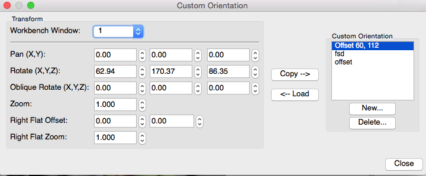

Custom Orientation
The Custom button
in the Orientation/Slice Plane sections of the Toolbar allows the user
to set, save, edit, or access custom orientations for Montage,
Volume, All, and Surface Views.
- Click Custom and Create and
Edit... to open the Custom Orientation settings box:

- Workbench Window sets the Workbench
Window to which the orientation transform
will be applied. Note: All tabs will have the transform
applied.
- Pan (X, Y) sets the
amount of X, Y, Z offset from the center.
- Rotate (X, Y, Z) sets the
rotation about the x-, y-, and z-axes.
- Oblique Rotate (X, Y, Z)
sets the rotation about the oblique x-, y-, and z-axes in Volume
or All
views-- only active when Oblique is selected in Slice
Indices/Coords.
- Zoom sets zoom factor relative
to the default of 1.
- Copy copies the settings from
the Transform fields to the selected (highlighted) Custom
Orientation file listed on the right.
- Load takes the settings from the
selected (highlighted) Custom Orientation file listed on the
right and applies them to the structures in the selected
Window.
- New.. and Delete...
allow one to create or delete Custom Orientations from the
list. The listed saved orientations are saved locally and will
be available every time Workbench is opened on the same
system.